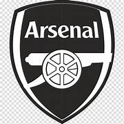

Programacion UTN
Franco Schmidt
mi objetivo del curso es aprender
tengo 29 años y soy arbitro de futbol
imagen multimedia

Posiciones Premier League
- Arsenal
- Liverpool
- Manchester City
- Aston villa
Equipos Premier League
- Burlney
- Wolves
- Shefield
- chelsea